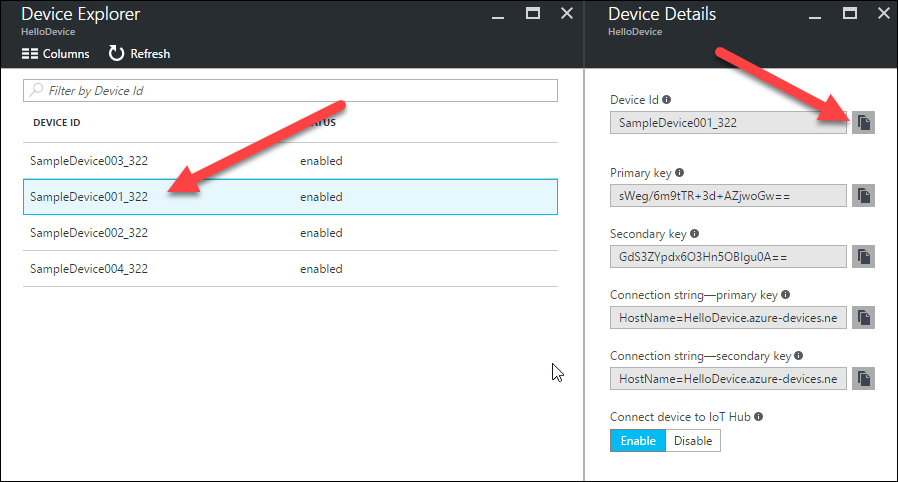
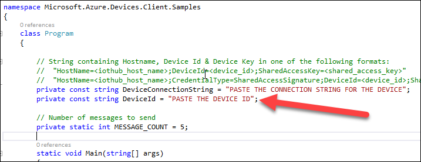
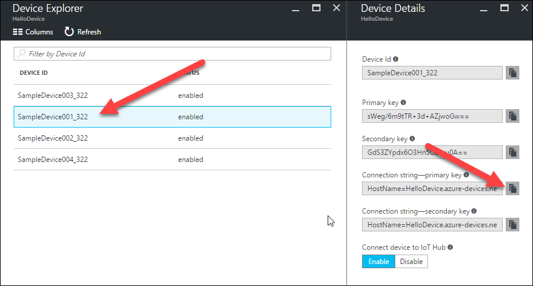
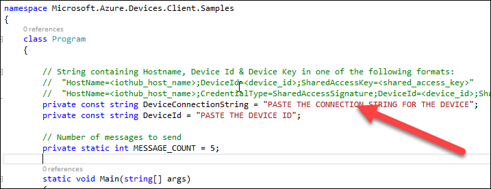
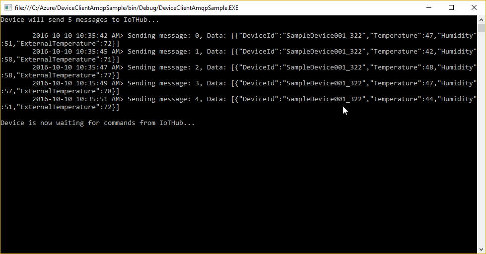
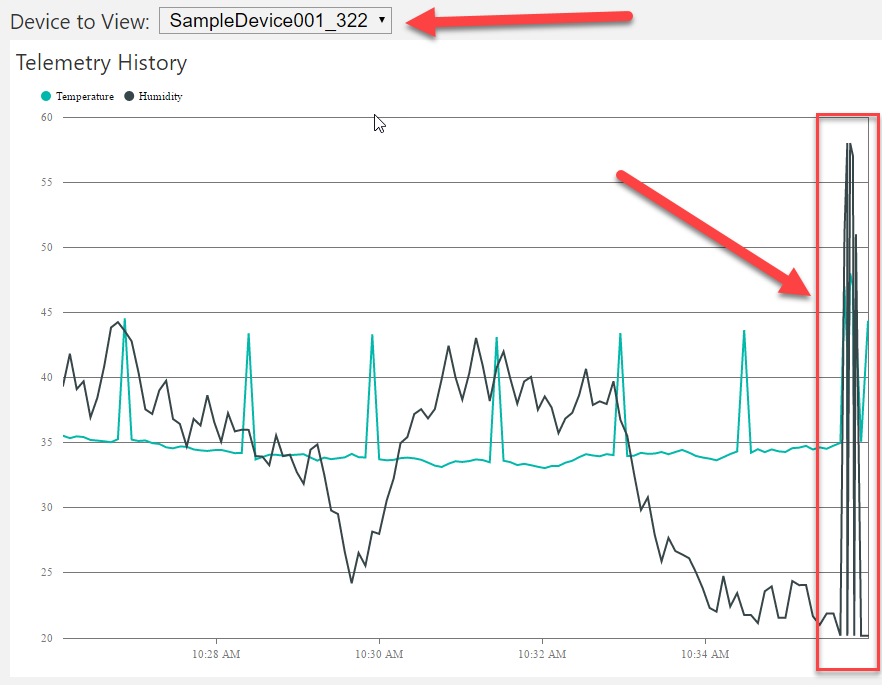
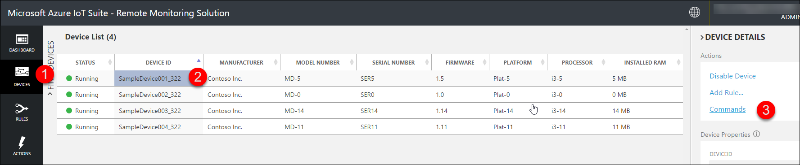
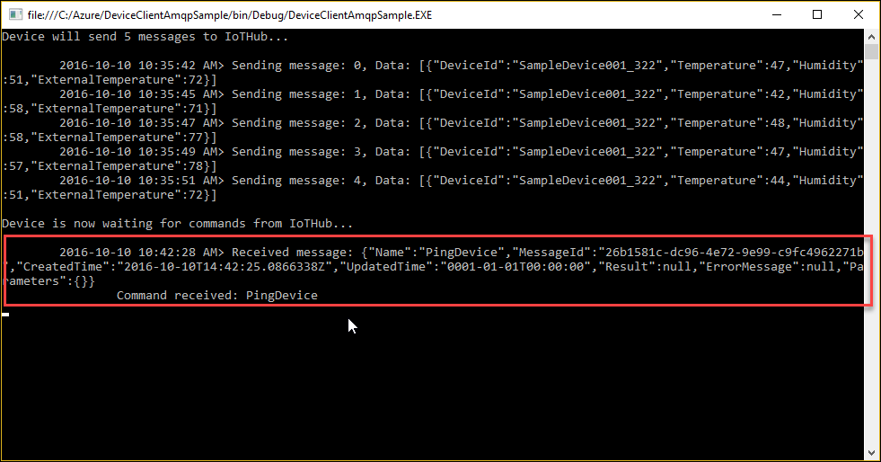

Demo 2.3: Sending messages and receiving commands using C#
Objectives
Show how to send message to the backend from a device running C#/.NET and receive commands sent from the solution portal on the device.
Requirements
An active Azure subscription. If you don’t have an account, you can create a free trial account in just a couple of minutes. For details, see http://azure.microsoft.com/pricing/free-trial/
The free Visual Studio 2015 Community Edition is required to run a C# solution that will send messages. If you don’t have Visual Studio or if you’re not running Windows, don’t despair as you can show the code in any text editor, you just won’t be able to run it.
Setup
You need the Remote Monitoring solution still running that you set up for Demo 2.1.
Find the Solutions folder for this presentation, then the Demo 2.3 and 2.5 folder, and the Visual Studio solution under DeviceClientAmqpSample. You’ll need this for the demo. You may want to copy this under your Documents folder to have a working copy.
Demo Steps
In this demo, you’ll explain how to send messages and received commands using C#.
Open the DeviceClientAmqpSample C# solution in Visual Studio. Explain that we’ll use one of the simulated device IDs and the connection string and we’ll get them from the Azure portal.
Head to the Azure portal, select the resource group for the Remote Monitoring solution and select the IoT Hub from the services list.
Click on the Devices button and select one of the devices.
Copy the device ID.

In Visual Studio, paste it as the DeviceId value.

Next, copy the device connection string from the portal.

Paste it as the DeviceConnectionString value.

Explain what the code will do:
Create a Microsoft.Azure.Devices.Client.DeviceClient object using the device connection string.
Call the SendEvent method.
Send 5 messages with some random data with a 2 seconds pause between each message.
Call the ReceiveCommands and wait for commands by looping.
Press F5 to start the project.
The console app will display the messages sent.

Head back to the Remote Monitoring Website and make sure that the device is the one selected in the dashboard. You should see a spike in the values sent. These are the messages you just sent using the console application.

Let’s now send a command to the device.
Click on Devices in the left-side menu, select the device you used and click on Commands in the right-side menu.

From the dropdown menu, select PingDevice and click Send Command.

The command will be displayed in the console window

This completes demo this demo.
Teardown
You will still need the Remote Monitoring solution (and the parts listed in the Azure portal) for other demos so don’t delete that stuff yet.